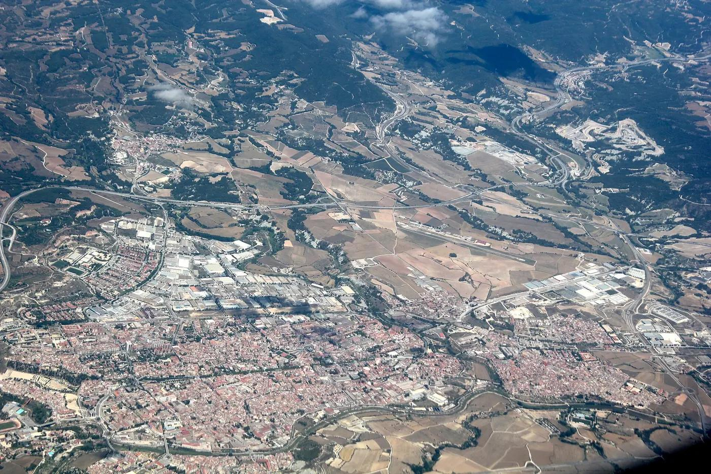
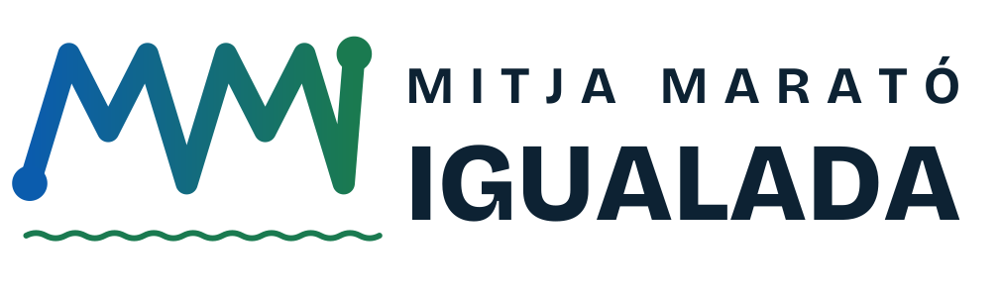
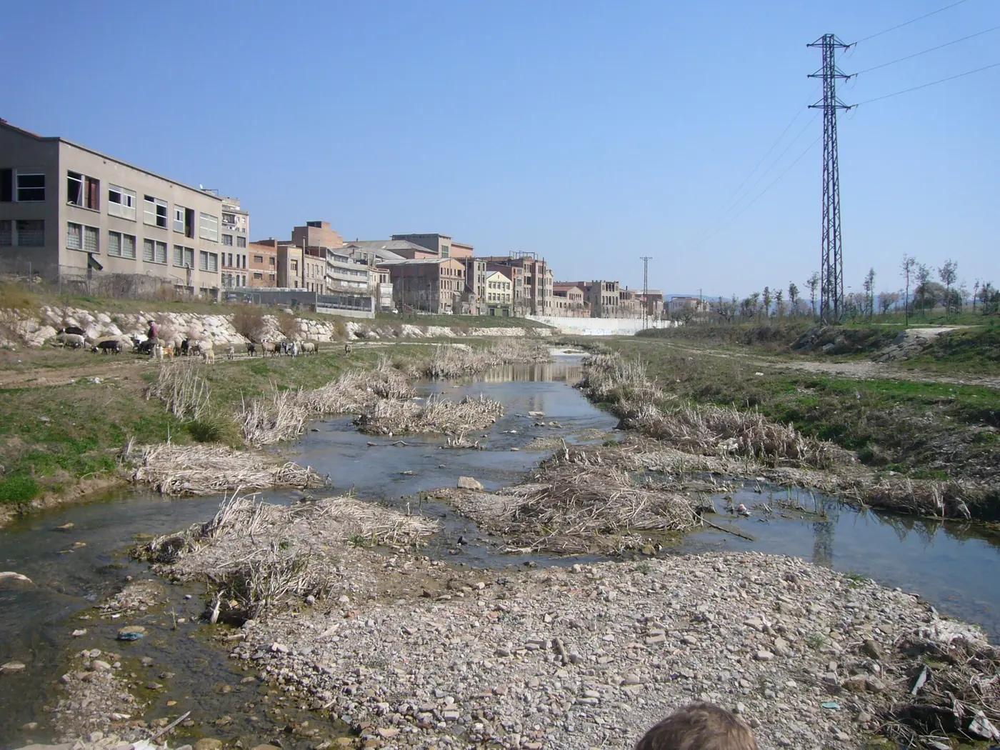

Tornem a fer córrer Igualada.
·
Una cursa que Igualada ja estimava, i que torna.
Benvolgut equip,
Durant anys, la Mitja Marató de l’Anoia va ser una cita fixa al calendari de la comarca. Va arribar a reunir prop de 900 corredors, i va desaparèixer. Aquest desembre la recuperem amb un nom nou, MM Igualada, i amb tres modalitats perquè hi pugui participar tothom: la 21K, una 10K i una caminada popular.
És la primera edició d’una nova etapa. Volem fer-la bé des del primer dia: amb els permisos dels ajuntaments d’Igualada i Vilanova del Camí, el teixit atlètic local i un recorregut pla pel Parc Central, el Parc Fluvial i l’Anella Verda.
Busquem empreses que vulguin créixer amb nosaltres. En aquest dossier trobareu què és la cursa, a qui arriba i totes les maneres de formar-ne part, des d’una tanca a la recta de meta fins a posar-li el vostre nom.
Ens agradaria molt comptar amb .

02Un matí de diumenge, tres curses i tota una ciutat.
No comencem de zero: recuperem una cursa històrica.
La comarca ja ha demostrat que respon. Ara tornem amb un format més obert, un recorregut més pla i una comunicació pensada per a les xarxes.
Afegir la 10K i la caminada multiplica el públic potencial: famílies, gent que comença a córrer, clubs i escoles. La 21K continua sent la prova reina.
- Els inicisMitja Marató de l’AnoiaRecorregut comarcal que, fins al 2013, passava per Jorba o Tous. Una cursa de referència a l’Anoia.
- El millor momentFins a ~900 corredorsDifusió a RAC1, cronometratge amb xip i suport de la Diputació de Barcelona.
- La davalladaDe 600 a 400 participantsLa participació baixa i la cursa deixa de fer-se. Aprenentatge: recorregut més pla i més difusió.
- 13.12.2026Neix la MM Igualada21K, 10K i caminada, sortida al Parc Central i una nova identitat. Primera edició d’una nova etapa.
Plans, ràpids i entre parcs.
Sortida i meta al Parc Central. El traçat passa per Igualada i Vilanova del Camí, el Parc Fluvial del riu Anoia i l’Anella Verda.
Una audiència activa, local i que es deixa veure.
- Corredors populars de 18 a 60 anys, amb molts perfils professionals i directius
- Famílies a la Caminada, oberta a totes les edats i amb gossos
- Clubs de l’Anoia, el Bages, el Penedès i l’àrea de Barcelona
- Públic al Parc Central i als punts d’animació
- Web oficial en català, castellà i anglès
- Plataforma d’inscripcions i correus als inscrits
- Instagram, Facebook i Strava de la cursa
- Cartells a Igualada i Vilanova del Camí
- 800 samarretes tècniques que es fan servir als entrenaments durant mesos
Ràdio Igualada i Canal Taronja ja han fet difusió de la cursa sense cost en edicions anteriors. Proposem tenir-los com a mitjans col·laboradors.

Una marca al costat del que la gent valora.
Una cursa feta a Igualada i Vilanova del Camí, amb proveïdors i voluntaris de la comarca.
Hàbits actius per a tothom: de la primera caminada a la primera mitja marató.
Pla de residus al Parc Fluvial i l’Anella Verda: dipòsits d’aigua, gots compostables i punts nets.
La Botifarrada Popular dona el 100% de la recaptació a una entitat social d’Igualada.
Categories d’esport adaptat amb trofeu propi: cadira de rodes i handbike, pròtesis i discapacitat visual.
El projecte neix d’un treball de final de grau, amb la implicació d’estudiants.
Així es veuria com a patrocinador principal.
El patrocinador principal no apareix només al costat de la cursa: en forma part del nom. Dissenyem el logotip conjunt a mida, i el posem a la samarreta, el dorsal, l’arc de meta i tota la comunicació.
800 samarretes, 7 espais.
La samarreta tècnica és l’obsequi de tots els inscrits i el soport que dura més: es fa servir als entrenaments durant mesos.
| 1 Pit, al costat de l’escut | Patrocinador principal |
| 5 Franja superior de l’esquena | Patrocinador principal (“by…”) |
| 3 Màniga dreta | Partner oficial |
| 4 Màniga esquerra | Partner oficial |
| 6 Fila de l’esquena (×6) | 350 € per logo |
| 2 Escut MM Igualada | Organització |
| 7 Institucions i bandera | Ajuntaments i CAI |
Les institucions que fan possible la cursa passen a la fila inferior de l’esquena, i deixen lliures les mànigues per als partners.
Cada punt del traçat és un espai de marca.
Grans patrocinis
Places úniques. S’adjudiquen per candidatura a l’oferta més alta, a partir del preu mínim. Detalls a la pàgina 18.
Moments de la cursa
Associeu la marca a un instant concret del dia: on la gent mira, s’atura i fa fotos.
L’arribada i la festa
El que passa després de creuar la meta: el que es menja, el que es fotografia i el que es recorda.
Dins del recorregut
Espais que acompanyen els corredors durant tota la cursa: ritme, voluntaris, entorn i resultats.
Visibilitat i espècie
Formats directes i assequibles per al comerç i l’empresa local, i col·laboracions amb producte.
Packs, i quin patrocini us encaixa segons el pressupost.
Tanques, quilòmetre patrocinat, col·laborador web, speaker, punt d’animació o Pack Comerç.
Esquena de la samarreta, avituallament, bossa, fotografia, trofeus, voluntariat, festa o Pack Dia de Cursa.
Partner oficial, recta de meta, medalla o modalitat, i el patrocini principal, amb candidatura.
Tots els patrocinis, d’un cop d’ull.
Sobre els preus: imports mínims sense IVA (21%). Es formalitzen amb contracte de patrocini i factura, i són despesa deduïble per a l’empresa. En els patrocinis per candidatura, el preu final és l’oferta guanyadora.
Els espais únics són per a qui més hi aposta.
Patrocinador principal, partners oficials, modalitats, recta de meta i medalla s’adjudiquen per candidatura. La resta, per ordre de confirmació.
- Empresa i persona de contacte
- Espai o espais que us interessen
- Import ofert (+ IVA)
- Producte o servei, si n’hi ha
- Logo en vectorial (SVG, AI o PDF)
- Si voleu activar un estand a la Fira
Dues empreses volen ser patrocinador principal. A ofereix 3.000 €. B ofereix 2.600 € + 900 € en producte per als avituallaments. B guanya: 3.500 € de valor, amb el producte per sota del 50%.
Per correu: l’espai que voleu i l’import que oferiu (igual o superior al mínim).
Fins al . Les ofertes són confidencials.
El , a l’oferta més alta. Si hi ha empat, decideix l’encaix amb la cursa i el territori.
Signatura del contracte i logos vectorials abans del , per imprimir les samarretes.
On va cada euro.
Pressupost estimat per a participants: . Organitza una entitat sense ànim de lucre: tot el que s’ingressa es destina a la cursa.
Què rebreu.
- Informe de retorn en 30 dies: participants, abast a la web i a les xarxes, i aparicions als mitjans
- Banc de fotos amb la vostra marca, lliure per fer-ne servir
- Certificat de patrocini per a la vostra memòria de RSC
- Factura i contracte de patrocini publicitari
- Dret de tanteig per a l’edició 2027
Els patrocinadors d’aquesta primera edició seran, per sempre, els que la van fer tornar.